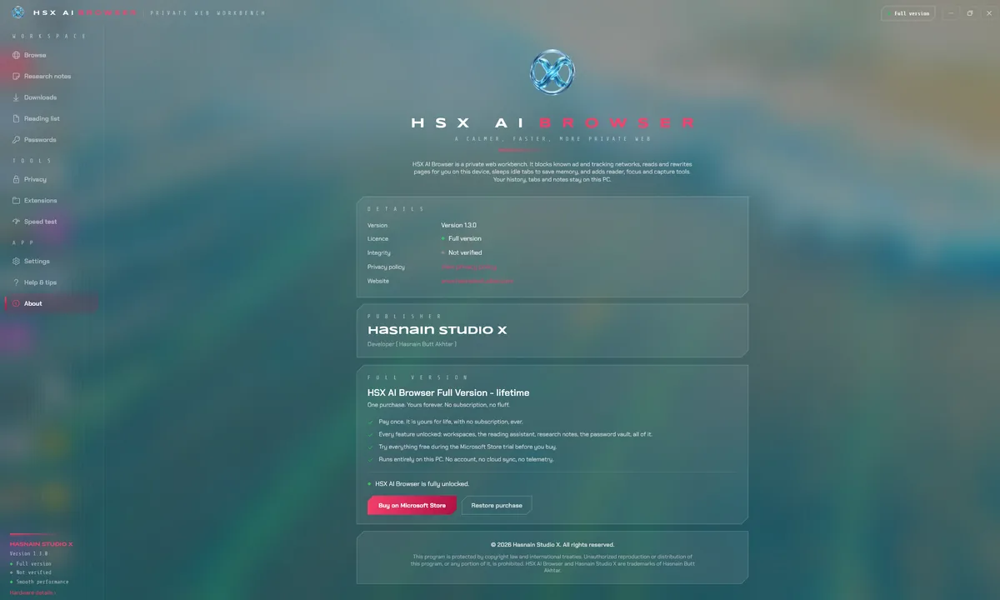
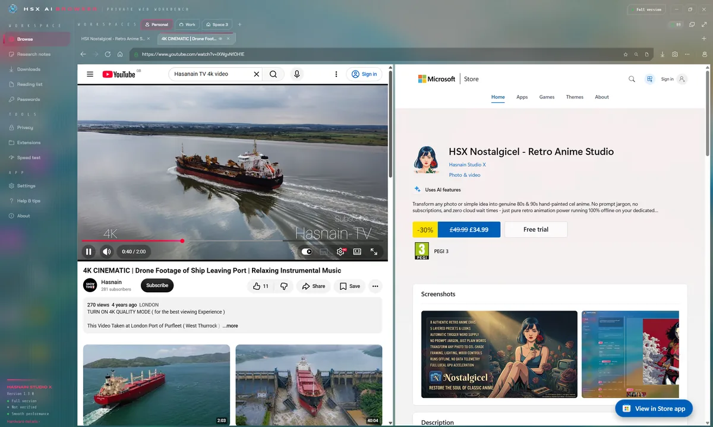
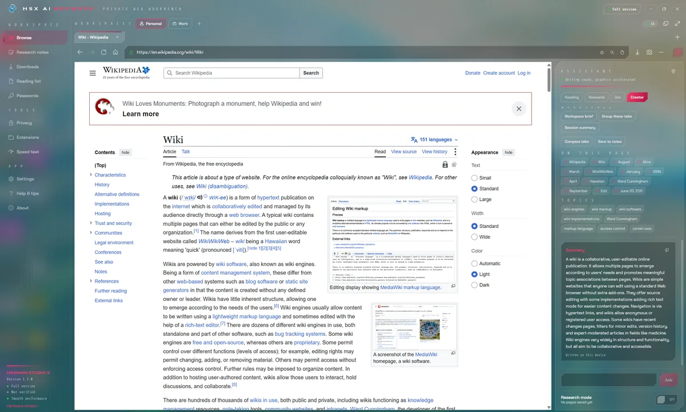
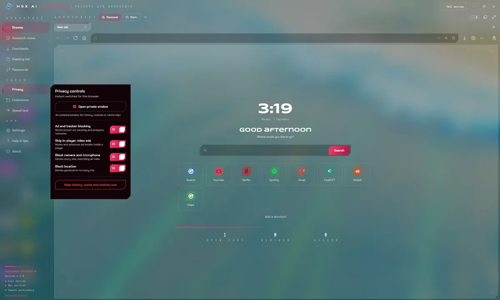

BrowseX AI
Private browsing, with AI that runs on your own PC
A privacy-first Windows browser that reads pages for you. Summarise a long article in seconds, pull out the points that matter, rewrite a passage in a different tone or draft something new, compare two pages side by side, and let research mode assemble a report from a session. Every one of those features runs on a model installed on your own machine, so the page you are reading is never uploaded anywhere. Underneath it is still a browser built for privacy: ad and tracker blocking, anti-fingerprinting, leak protection, HTTPS-only mode and secure DNS, with no account and no telemetry.
Previously released as HSX AI Browser.
£11.89 on the Microsoft Store (UK), with a free trial firstPrice checked 6 October 2026. Prices differ by country; the Store shows yours.
Buy it once through the Microsoft Store. There is no renewal, and no account to keep it working: the copy on your machine keeps running whether or not this studio is still here. Genuine copies are sold only on the Microsoft Store.
What BrowseX AI does
- Page summaries and key point extraction in seconds
- One-click tone rewriting, and drafting from scratch
- Side-by-side page comparison, and a research mode that writes the report
- Workspaces that keep separate pieces of work apart
- Ad and tracker blocking, anti-fingerprinting and leak protection
- HTTPS-only mode and secure DNS
- Every AI feature runs on your own PC, with no account and no telemetry
Is BrowseX AI right for my PC?
The requirements Microsoft lists on the BrowseX AI Store page, and a download of about 1.5 GB.
| Part | Minimum | Recommended |
|---|---|---|
| Windows | Windows 10 (version 2004) or Windows 11 | Windows 10 (version 2004) or Windows 11 |
| Processor | Quad core Processor X64 | Octa core Processor X64 |
| Memory | 8 GB | 16 GB |
| Graphics memory | 2 GB | 4 GB |
| DirectX | Version 11 | DirectX 12 API, Hardware Feature Level 12 |
The check runs in your browser and sends nothing anywhere. Browsers only report part of the picture, so the Microsoft Store makes the final check when you install.
Your first hour with BrowseX AI
A short plan for getting to a real result while the trial is still running.
Start the free trial
Get BrowseX AI from the Microsoft Store. The Store page shows how long the trial lasts, so you know your window before you begin.
Use your own work
Try it on your own PC and real tasks rather than a quick look around. That is the only test that tells you whether it earns its place.
Try this
Page summaries and key point extraction in seconds
Try this
One-click tone rewriting, and drafting from scratch
Try this
Side-by-side page comparison, and a research mode that writes the report
Decide before it ends
If it earned its place, buy it on the Microsoft Store before the trial runs out. The purchase unlocks the copy you already have, so there is nothing to reinstall.
BrowseX AI on screen




BrowseX AI running on Windows, captured from the application itself.
Who it is for
BrowseX AI is built for writers, students and professionals who want an assistant and their documents to stay on their own machine.
It sits in the AI assistants & documents part of the catalogue, and your documents never leave the machine to be processed. There is no server behind BrowseX AI to send them to.
Local-first, by design
Plenty of the alternatives send your documents to a server to be handled. BrowseX AI does not. Processing runs on your CPU or GPU, and the documents you open stay where you put them. BrowseX AI does reach the internet for the content it displays, but nothing about you or your files travels the other way.
That is not a setting you enable, it is how BrowseX AI is built, which is why there is no account to create and no subscription to lapse. Full detail is in the BrowseX AI privacy policy.
Technical details
- Platform
- Windows 10, Windows 11
- Distribution
- Microsoft Store
- Availability
- Available now
- Licence
- Free trial, then £11.89 once (UK)
- Network required
- Online content only
- Account required
- None
- Telemetry
- None
- Publisher
- Hasnain Studio X
- Developer
- Hasnain Butt Akhtar
Reviews on the Microsoft Store
Every written review of BrowseX AI, word for word, as it appears on its Store page.
Smart BROWSER
Excellent Browser.
Reply from Hasnain Studio XThanks for the 5‑star rating! Glad you’re enjoying the browser. More updates ahead.
Questions
Does BrowseX AI need an internet connection?
Yes, because BrowseX AI works with content that lives online. That connection is used to fetch that content and nothing else: your settings, your history and your files are held on your device and are never sent to Hasnain Studio X.
Does BrowseX AI require an account?
No. There is no registration, no sign-in and no online identity. You install the application and use it.
What data does BrowseX AI collect?
None. There is no analytics, no usage tracking and no crash reporting that leaves your device, and your documents are never uploaded. The full detail is in the BrowseX AI privacy policy.
Is BrowseX AI a subscription?
No. BrowseX AI is a free trial followed by a one-time purchase through the Microsoft Store. There is no recurring fee.
Which versions of Windows does it support?
Windows 10 and Windows 11.
Related applications
More of the same kind of tool is listed on private AI assistants, writing and document apps for Windows.
Get BrowseX AI
Available now on the Microsoft Store. Try it free, then a single purchase unlocks it for good with no subscription and no account.
Not ready to buy yet? HSX Apps Hub is free on the Microsoft Store. It shows which of your HSX apps have updates and tells you when a new one is out.
Also listed under privacy tools.
BrowseX AI privacy policy · Support and bug reports · AI writing & docs apps · Full catalogue
BrowseX AI™ is a trademark of Hasnain Studio X. Hasnain Studio X™ is a trade mark of Hasnain Studio X.